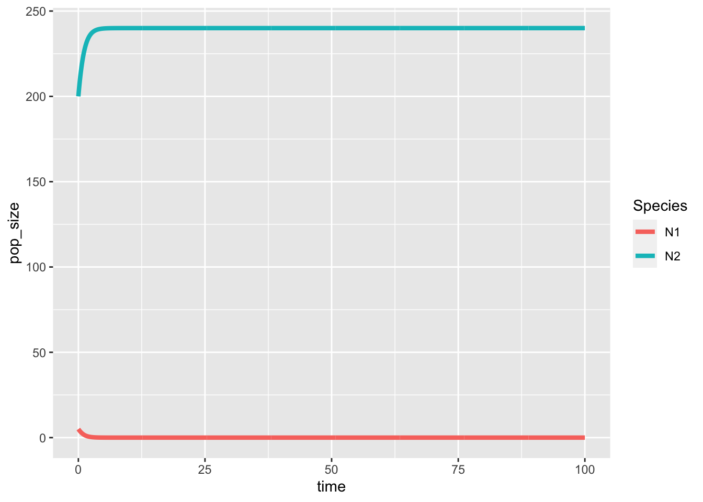
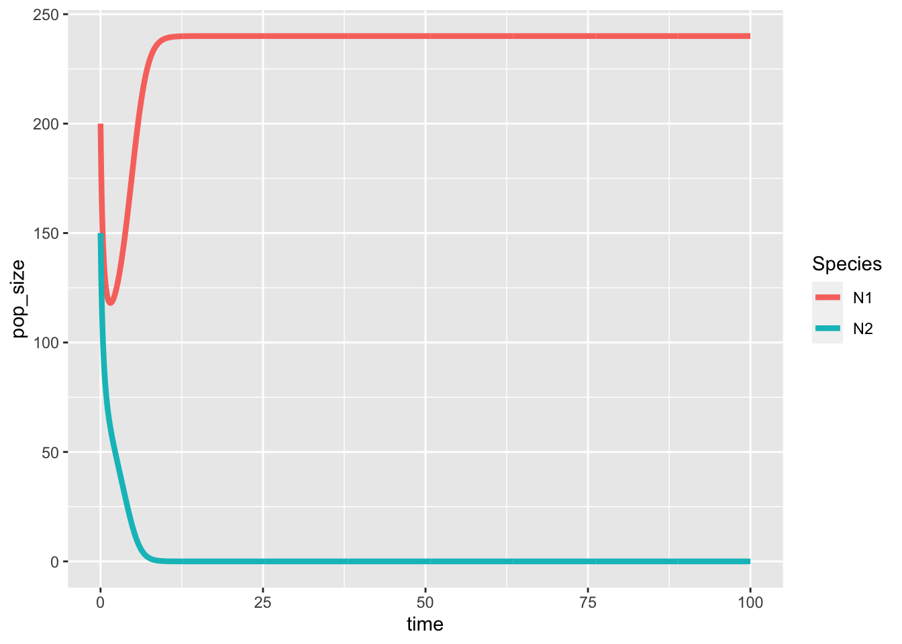
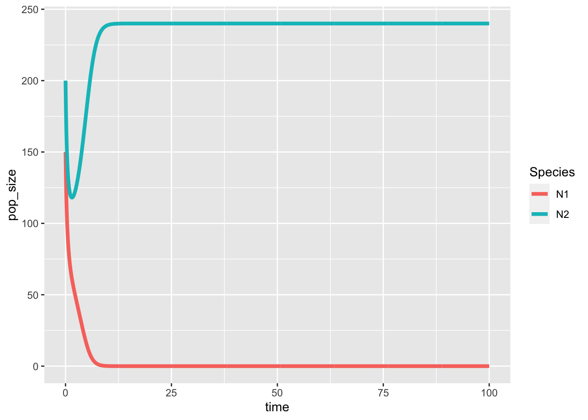
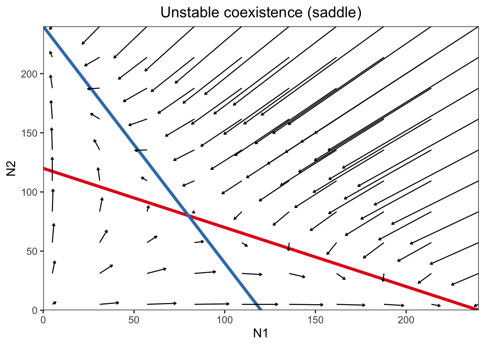

Week 7 - Lotka-Volterra competition model
In this lab, we are going to analyze the two-species Lotka-Volterra competition model numerically and visualize the population dynamics under different parameter settings.
library(ggplot2)
library(tidyverse)
library(deSolve)
LV_model <- function(r1 = 1.4, r2 = 1.2, a11 = 1/200, a21 = 1/400, a22 = 1/200, a12 = 1/300, N1_0 = 10, N2_0 = 10) {
### Model specification
LV <- function(times, state, parms) {
with(as.list(c(state, parms)), {
dN1_dt = N1 * (r1 - a11*N1 - a12*N2)
dN2_dt = N2 * (r2 - a22*N2 - a21*N1)
return(list(c(dN1_dt, dN2_dt)))
})
}
### Model parameters
times <- seq(0, 100, by = 0.1)
state <- c(N1 = N1_0, N2 = N2_0)
parms <- c(r1 = r1, r2 = r2, a11 = a11, a21 = a21, a22 = a22, a12 = a12)
### Model application
pop_size <- ode(func = LV, times = times, y = state, parms = parms)
### Visualize the population dynamics
pop_size %>%
as.data.frame() %>%
gather(key = "Species", value = "pop_size", -time) %>%
ggplot(aes(x = time, y = pop_size, color = Species)) +
geom_line(size = 1.5)
}
### Different parameter settings
## N1_0 = 200 and N2_0 = 5
LV_model(r1 = 1.2, r2 = 1.2, a11 = 1/200, a21 = 1/100, a22 = 1/100, a12 = 1/200, N1_0 = 200, N2_0 = 5) # N1 wins ## N1_0 = 5 and N2_0 = 200
LV_model(r1 = 1.2, r2 = 1.2, a11 = 1/200, a21 = 1/100, a22 = 1/100, a12 = 1/200, N1_0 = 10, N2_0 = 200) # N1 wins ## N1_0 = 200 and N2_0 = 5
LV_model(r1 = 1.2, r2 = 1.2, a11 = 1/100, a21 = 1/200, a22 = 1/200, a12 = 1/100, N1_0 = 200, N2_0 = 5) # N2 wins ## N1_0 = 5 and N2_0 = 200
LV_model(r1 = 1.2, r2 = 1.2, a11 = 1/100, a21 = 1/200, a22 = 1/200, a12 = 1/100, N1_0 = 5, N2_0 = 200) # N2 wins
## N1_0 = 200 and N2_0 = 5
LV_model(r1 = 1.2, r2 = 1.2, a11 = 1/100, a21 = 1/200, a22 = 1/100, a12 = 1/300, N1_0 = 200, N2_0 = 5) # stable coexistence ## N1_0 = 5 and N2_0 = 200
LV_model(r1 = 1.2, r2 = 1.2, a11 = 1/100, a21 = 1/200, a22 = 1/100, a12 = 1/300, N1_0 = 5, N2_0 = 200) # stable coexistence ## N1_0 = 200 and N2_0 = 150
LV_model(r1 = 1.2, r2 = 1.2, a11 = 1/200, a21 = 1/100, a22 = 1/200, a12 = 1/100, N1_0 = 200, N2_0 = 150) # priority effect (N1 wins)
## N1_0 = 150 and N2_0 = 200
LV_model(r1 = 1.2, r2 = 1.2, a11 = 1/200, a21 = 1/100, a22 = 1/200, a12 = 1/100, N1_0 = 150, N2_0 = 200) # priority effect (N2 wins)
#### phase diagram
phase_plane <- function(r1, r2, a11, a21, a22, a12, title, t){
### Vectors
LV <- function(times, state, parms) {
with(as.list(c(state, parms)), {
dN1_dt = N1 * (r1 - a11*N1 - a12*N2)
dN2_dt = N2 * (r2 - a22*N2 - a21*N1)
return(list(c(dN1_dt, dN2_dt)))
})
}
times <- c(0, t)
parms <- c(r1 = r1, r2 = r2, a11 = a11, a21 = a21, a22 = a22, a12 = a12)
x_inter<- max(c(r1/a11, r2/a21))
y_inter <- max(c(r2/a22, r1/a12))
# create position of arrows
vector_grid <- expand.grid(seq(5, x_inter, length.out = 10),
seq(5, y_inter, length.out = 10))
vector_data <- vector_grid %>%
pmap(., function(Var1, Var2){
state <- c(N1 = Var1, N2 = Var2)
pop_size <- ode(func = LV, times = times, y = state, parms = parms)
pop_size[2, 2:3]
}) %>%
bind_rows() %>%
rename(xend = N1, yend = N2) %>%
bind_cols(vector_grid) %>%
rename(x = Var1, y = Var2)
### Phase plane
ggplot() +
geom_abline(slope = -a11/a12, intercept = r1/a12, color = "#E41A1C", size = 1.5) +
geom_abline(slope = -a21/a22, intercept = r2/a22, color = "#377EB8", size = 1.5) +
geom_segment(data = vector_data,
aes(x = x, y = y, xend = xend, yend = yend),
arrow = arrow(length = unit(0.1, "cm"))) +
scale_x_continuous(name = "N1", limits = c(0, x_inter), expand = c(0, 0)) +
scale_y_continuous(name = "N2", limits = c(0, y_inter), expand = c(0, 0)) +
theme_bw(base_size = 13) +
theme(panel.grid = element_blank(),
plot.title = element_text(hjust = 0.5)) +
labs(title = title)
}
phase_plane(r1 = 1.2, r2 = 1.2, a11 = 1/100, a21 = 1/200, a22 = 1/100, a12 = 1/300, t = 0.3, title = "Stable coexistence") phase_plane(r1 = 1.2, r2 = 1.2, a11 = 1/200, a21 = 1/100, a22 = 1/200, a12 = 1/100, t = 0.3, title = "Unstable coexistence (saddle)")